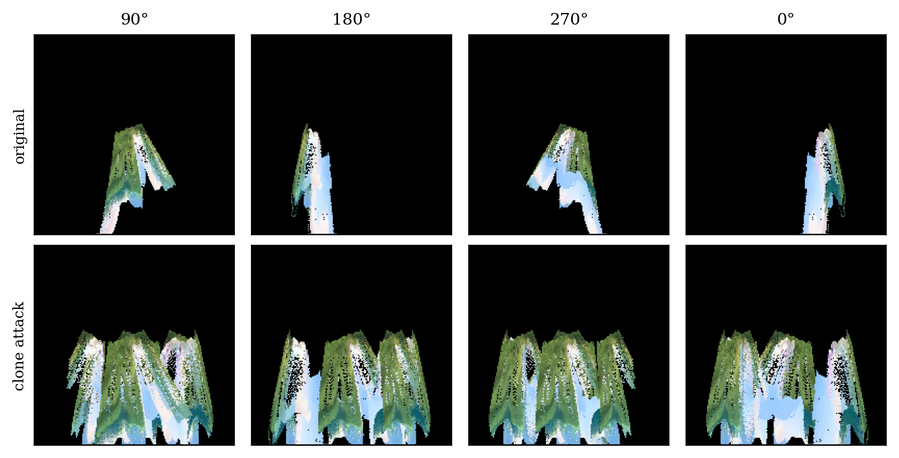
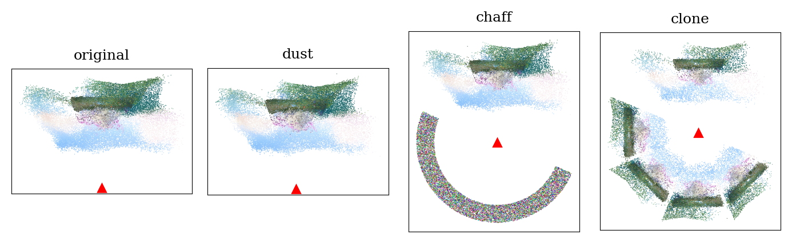
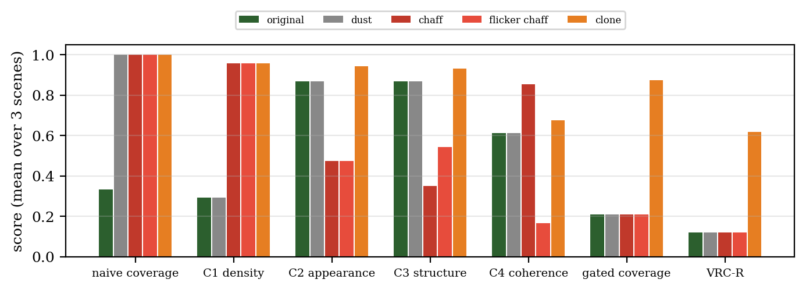

BARF: 4D Completion
Monocular video to a complete, explorable 360° 4D scene, plus a metric that cannot be gamed by empty points.
Live app
Point-cloud 4D viewer (WebGL). Loads the bundled scene, or drop your own .ply frames.
Results



How it works
BARF — Binarily Augmented Reality Footage
Can we transform a single monocular video into a complete, explorable 360° 4D scene by generating everything the camera never saw?
What This Project Is
BARF started in February 2026 as an attempt to build a generative 4D completion system — taking a monocular video reconstruction (which only captures what the camera saw) and filling in the rest of the viewing sphere with AI-generated content for VR exploration.
While building the system, we ran into two problems: (1) the GPU compute needed to train the generative model at scale, and (2) a more fundamental question — how would we even know if a completion system had actually worked?
That second question became the focus. We discovered that the obvious evaluation metric (angular coverage) is critically broken, and wrote a paper about it:
📄 Gaming the Sphere: A Gameability Audit of VR-Completeness Metrics for Generative 4D Scene Completion
What's In This Repo
Completed and working:
- Gameability audit paper (
paper/barf_paper.pdf) — adversarial attacks on naive coverage metrics, a robust replacement metric (VRC-R), and a fundamental negative result about reference-free evaluation - VRC-Score / VRC-R metrics (
src/metrics/) — formal VR-completeness metrics, 135 passing tests - Adversarial attack suite (
src/attacks/) — dust, chaff, flicker chaff, and clone attacks - Gap detection (
src/gap_detection/) — angular coverage analysis on real reconstructed scenes - Experiment pipeline (
scripts/) — every number and figure in the paper is generated from committed code and data - Web viewer (
viewer/) — browser-based point cloud viewer with gap visualization - Feb 2026 sprint archive (
feb_sprint/) — early benchmarking of D4RT, NeoVerse, CAP4D, and other methods
Designed but not yet executed (pending GPU access):
- Spherical 4D Completion Module (
src/completion/spherical_completion.py) — the generative model itself. Architecture is implemented against the Vivid4D backbone but outputs a pass-through placeholder; real inference requires A100/H100-class compute. - VR export pipeline (
src/vr/export_splat.py) — Quest-compatible.splatexporter. Code is written but untested on actual hardware.
The Paper
Key findings from "Gaming the Sphere":
- Inserting just 20 content-free points can flip a 2.5-million-point scene from 12% to "100% complete" on a naive coverage metric
- We define a taxonomy of degenerate completions: dust, chaff, flicker chaff, and clone
- We construct VRC-R, a robust metric suite that resists all attacks except clone
- We prove a fundamental negative result: reference-free metrics can certify that plausible-looking content exists everywhere, but they can never certify it's correct
Quick Start
git clone https://github.com/Saivinay24/barf-4d-completion
cd barf-4d-completion
pip install -r requirements.txt
# Run tests
python3 -m pytest tests/ -q
# 135 passed
# Reproduce all paper results
bash scripts/reproduce.sh
Repository Structure
barf-4d-completion/
├── src/
│ ├── gap_detection/ # Angular coverage analysis
│ ├── metrics/ # VRC-Score and VRC-R
│ ├── attacks/ # Adversarial attacks (dust, chaff, clone)
│ ├── completion/ # Completion module (placeholder, pending GPU)
│ └── vr/ # Quest .splat exporter (untested on hardware)
│
├── scripts/ # Experiment runner, figure generator, reproduce.sh
├── tests/ # 135 tests
├── paper/ # Paper PDF + reproducibility docs
├── viewer/ # Web-based 3D viewer
├── data/ # Test scenes (npz)
├── results/session/ # Raw result artifacts behind every paper number
├── BARF_VRC_SCORE.md # VRC-Score formal mathematical definition
└── feb_sprint/ # Archived Feb 2026 sprint work
Related Work
| Method | What It Does |
|---|---|
| D4RT | 4D reconstruction + tracking from monocular video |
| NeoVerse (CVPR 2026) | Feed-forward 4DGS from in-the-wild clips |
| Vivid4D (ICCV 2025) | 4D reconstruction via video inpainting |
| Full-4D (2026) | Full-scope 4D generation from single-view video |
| BARF (This repo) | Evaluation metrics and gameability audit for 4D completion |
License
MIT License, see LICENSE for details.
Team: Sai Vinay Bhoomireddy, Aditya, Aryan Srivastava, Shrit Shrivastava, Tanisha, Palak Patnaik